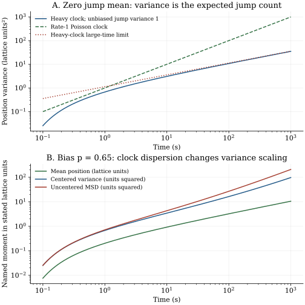

Chapter 23 · Lecture 27
Renewal memory and anomalous diffusion
A transport record has a displacement variance growing slower than time. Is the jump geometry unusual, or does the walker spend most of its time waiting? A renewal clock with an infinite mean wait produces subdiffusion on an ordinary lattice. Adding a small directional bias creates another complication: random clock dispersion can make the centered variance grow with a different power from the unbiased variance. The mean, centered variance, and uncentered mean square displacement must be calculated separately.
The full caption track of lecture 27 was read. Its sequence supplies the spatial/temporal factorization, the essential final-wait survival factor, transform solution, and long-time moments. One still at 1630 seconds was inspected, with part of the transform obscured. The exact half-stable clock, biased-moment audit, primary Tauberian qualification, numerical experiment, and exercises are additions. Independent audio was not reviewed.
23.1 Specify a clock independently of the jumps L27 1:33
Let the iid real spatial jumps $J_j$ have characteristic function $\phi(k)=\mathbb E[e^{ikJ_j}]$, mean $\mu_J$, and finite variance $\sigma_J^2$. Their units are length and length squared; $k$ has inverse-length units. Let iid strictly positive waits $W_j$ be independent of the jump sequence, with density $\psi$, survival $\Psi$, and Laplace transform $\widetilde\psi(s)=\mathbb E[e^{-sW}]$ for $s\gt0$ in inverse seconds. Start at the origin at a fresh renewal. As in chapter 22, $S_n=\sum_{j=1}^nW_j$, $N(t)=\max\{n:S_n\leq t\}$, and $X(t)=\sum_{j=1}^{N(t)}J_j$.
On a hypercubic lattice in $d$ dimensions, one jump can have probabilities $p_i^+$ and $p_i^-$ for $\pm\ell e_i$, with $\sum_i(p_i^++p_i^-)=1$. Its transform is $\sum_i[p_i^+e^{ik_i\ell}+p_i^-e^{-ik_i\ell}]$. Individual directional probabilities are fractions of the total jump choice; they need not sum to one separately in each coordinate. The scalar argument below applies to any one coordinate or to general independent scalar jumps. Persistence in the jump directions cannot be hidden inside the scalar clock law while retaining the iid spatial factorization.
23.2 The final waiting interval enforces normalization L27 16:51
Write $w_n(t)=\Pr(N(t)=n)$. The nth arrival density is $\psi^{*n}$, but occupancy at $n$ jumps requires no additional arrival during the remaining interval. Hence $w_n=\psi^{*n}*\Psi$, with $w_0=\Psi$. The waiting density need not decrease with time: a sharply peaked positive waiting law is valid too. Nonnegativity, unit integral, independence, and the positive-wait construction are the assumptions used here.
Conditional on $N(t)=n$, independence gives position transform $\phi(k)^n$. The occupancy convolution gives $\widetilde w_n=\widetilde\psi^n\widetilde\Psi$, with $\widetilde\Psi=(1-\widetilde\psi)/s$ by integration of survival. Summing over $n\geq0$ is an absolutely convergent geometric series because $|\phi(k)|\leq1$ and $0\leq\widetilde\psi(s)\lt1$ for positive waits and positive $s$. This yields (23.1). At $k=0$, $\phi(0)=1$ and the result becomes $1/s$, proving probability normalization. ∎
This is the decoupled Montroll–Weiss formula; Meerschaert–Scheffler, Section 2, equation (4), PDF page 3, gives the same occupancy derivation. The numerator includes the probability of still waiting after the final observed jump. Omitting it would make the zero-wave-number transform $1/(1-\widetilde\psi)$ rather than $1/s$, exposing the normalization failure before any inverse transform is attempted.
For exponential waits of rate $\lambda$, $\widetilde\psi=\lambda/(s+\lambda)$ reduces (23.1) to $[s+\lambda(1-\phi(k))]^{-1}$. Inverting in time gives $\mathbb E[e^{ikX(t)}]=\exp[\lambda t(\phi(k)-1)]$, the compound-Poisson transform. For nearest-neighbor jumps it recovers the lattice laws of chapters 6–7. The same check also fixes the normalization of the waiting-rate parameter.
23.3 Bias couples position scatter to clock scatter L27 32:49
Let $m(t)=\mathbb E[N(t)]$ and $v_N(t)=\operatorname{Var}(N(t))$. Conditional on a finite count $n$, the sum has mean $n\mu_J$ and variance $n\sigma_J^2$. At fixed finite time these count moments are finite for the stated iid strictly positive wait construction. For example, choose $\epsilon\gt0$ with $\Pr(W\geq\epsilon)\gt0$; the event of arbitrarily many renewals by $t$ requires an atypically small number of those positive-length waits, giving an exponentially decaying count tail.
Total expectation averages the conditional mean $N\mu_J$. For the variance, expand $X-\mathbb E X$ into $X-\mathbb E[X\mid N]$ plus $\mathbb E[X\mid N]-\mathbb E X$. The cross term has zero conditional expectation. The first squared term averages to $\sigma_J^2\mathbb E N$, and the second to $\mu_J^2\operatorname{Var}N$. Adding the squared mean gives the uncentered second moment. ∎
When $\mu_J=0$, position variance measures the expected number of jumps. When $\mu_J\ne0$, walkers with different jump counts accumulate different mean displacements; their clock scatter creates extra centered variance. Under a Poisson clock $m=v_N=\lambda t$, giving $\operatorname{Var}X=\lambda t\mathbb E[J^2]$. The uncentered second moment also contains a ballistic $\mu_J^2\lambda^2t^2$ term. Calling that entire quantity diffusion without subtracting drift would misidentify the mechanism.
To extract the count moments from transforms, define $G(z,t)=\mathbb E[z^{N(t)}]$. Equation (23.1) with $\phi$ replaced by $z$ gives its time transform. Differentiating at $z=1$ yields $\widetilde m(s)=\widetilde\psi/[s(1-\widetilde\psi)]$ and $\mathcal L\{\mathbb E[N(N-1)]\}=2\widetilde\psi^2/[s(1-\widetilde\psi)^2]$. The second derivative generates a factorial moment, not $N^2$; add $m(t)$ before computing $v_N(t)$. This is the same ordinary-versus-factorial distinction encountered for counting laws in chapter 1.
23.4 A small-transform power needs a Tauberian condition L27 37:59
Assume $1-\widetilde\psi(s)\sim(\tau_0s)^\alpha$ as $s\downarrow0$, with $0\lt\alpha\lt1$ and time scale $\tau_0\gt0$. This nonanalytic correction signals an infinite mean waiting time. For comparison, any finite positive mean $\mu_W$ gives $1-\widetilde\psi(s)\sim\mu_Ws$ by dominated convergence applied to $(1-e^{-sW})/s$. Full analyticity at zero is not required for that finite-mean relation.
The inference from transform behavior to a long-time function is a Tauberian implication: it needs restrictions that prevent arbitrary oscillatory counterexamples. The form used here concerns a nondecreasing right-continuous function $U$ whose Laplace–Stieltjes transform is finite for positive arguments. If $\int e^{-st}dU(t)\sim c s^{-\beta}$, for $c\gt0$ and $\beta\geq0$, then $U(t)\sim ct^\beta/\Gamma(1+\beta)$. This is the constant-slow-factor case of Meerschaert–Scheffler, Section 3, equations (3.1)–(3.2). The gamma function is $\Gamma(z)=\int_0^\infty u^{z-1}e^{-u}du$ for positive $z$. The theorem is cited here; applying it to monotone renewal moments is the argument supplied next.
The exact moment transforms give $s\widetilde m(s)\sim\tau_0^{-\alpha}s^{-\alpha}$ and $s\mathcal L\{\mathbb E[N(N-1)]\}\sim2\tau_0^{-2\alpha}s^{-2\alpha}$. Both moments are nonnegative, nondecreasing, and right-continuous in time. They vanish initially and have finite positive-argument transforms, so these are their Laplace–Stieltjes transforms. The cited Tauberian theorem gives the first formula and factorial moment $2(t/\tau_0)^{2\alpha}/\Gamma(1+2\alpha)$. Adding $m$ and subtracting $m^2$ gives the variance asymptotic. The coefficient is positive for $0\lt\alpha\lt1$; it represents nonvanishing relative clock dispersion in this limit. Finally apply (23.2) with $\mu_J=0$. ∎
At nonzero bias, the $\mu_J^2v_N$ contribution has power $t^{2\alpha}$ and eventually dominates $\sigma_J^2m$. Thus the same clock gives an unbiased centered variance with exponent $\alpha$ and a biased centered variance with exponent $2\alpha$. The uncentered second moment adds another term of order $t^{2\alpha}$. At $\alpha=1/2$, unbiased variance is proportional to $\sqrt t$, while biased variance is asymptotically linear in $t$. The clock has not become memoryless. A fitted exponent of one under bias does not establish ordinary Markov diffusion.
The positivity used in the variance asymptotic can also be checked directly. Define $B(\alpha,\alpha)=\int_0^1 u^{\alpha-1}(1-u)^{\alpha-1}du=\Gamma(\alpha)^2/\Gamma(2\alpha)$. For $0\lt\alpha\lt1$, its integrand exceeds $u^{\alpha-1}$, so $\alpha B(\alpha,\alpha)\gt1$. Hence $\Gamma(1+2\alpha)/\Gamma(1+\alpha)^2=2/[\alpha B(\alpha,\alpha)]\lt2$, precisely the inequality $C_\alpha\gt0$. The beta–gamma identity follows by substituting total radius and fraction in the product of two gamma integrals.
With a finite mean wait, the same monotone transform argument gives $m(t)\sim t/\mu_W$, hence ordinary linear ensemble variance for zero-mean finite-variance jumps, even if the waiting law is nonexponential and the position process has memory. Biased variance additionally depends on clock fluctuations; finite mean alone does not determine those. Long-memory timing and a transport exponent are distinct properties.
23.5 A clock with an exact count-tail formula
For a concrete synthetic clock, measure time in seconds and set $W=1/(2Z^2)$ seconds, where $Z$ is standard Gaussian. Chapter 4's Lévy transform gives $\widetilde\psi(s)=e^{-\sqrt s}$ in these numerical units. Sums of $n$ waits have the law of $n^2W$, so $\Pr(N(t)\geq n)=\Pr(S_n\leq t)=\operatorname{erfc}[n/(2\sqrt t)]$ for positive integers $n$. This is exact at every positive time, not just asymptotic. In a dimensional expression replace $t$ by $t/\tau_0$ with $\tau_0=1$ second.
The integer identities $N=\sum_{n\geq1}\mathbf1_{N\geq n}$ and $N^2=\sum_{n\geq1}(2n-1)\mathbf1_{N\geq n}$ give rapidly convergent series for its mean and variance. They supply independent numerical targets for the renewal Monte Carlo. At long time $m(t)\sim2\sqrt{t/\pi}$ and $v_N(t)\sim(2-4/\pi)t$ in these units. The exact mean at time one is 0.675802, far below its leading asymptotic 1.128379. A long-time exponent can be right while a finite-time prefactor estimate remains poor.
23.6 Computational laboratory: compare three moments and two averages
The lab simulates 20,000 independent Lévy renewal clocks at four observation times with seed 2026110827. It generates each positive wait from the reciprocal Gaussian square, preserving jumps at their actual epochs. The exact count-tail series gives the independent mean and variance targets. Conditional binomial draws implement either unbiased signs or right-step probability 0.65, with jump mean 0.3 and variance 0.91 in lattice units. Thus the random-sum predictions can be checked separately from the clock simulation.
t=1: E[N]=0.675802; sample=0.679050; biased variance=0.678054; biased MSD=0.719157 t=10: E[N]=3.083128; sample=3.062350; biased variance=3.457654; biased MSD=4.313165 t=100: E[N]=10.788494; sample=10.674900; biased variance=16.356321; biased MSD=26.831565 t=1000: E[N]=35.183969; sample=35.491250; biased variance=97.423803; biased MSD=208.835855 Lag10 ensemble MSD=3.083128; time-average mean=0.353841, across-path SD=0.319048
The final line compares the ensemble displacement over the first ten seconds of fresh clocks with a different statistic: squared ten-second increments averaged along each of 64 paths of duration 1,000 seconds, sampled every second. The latter intervals mostly begin at a positive waiting age and overlap in time. Their across-path standard deviation is large. This finite-horizon experiment demonstrates preparation and averaging effects under a specified protocol; it is not a proof of a general ergodic theorem or a universal relation for time averages. The exact renewal analysis supplies the ensemble scaling.

def random_sum_moments(jump_mean, jump_variance, count_mean, count_var):
mean = jump_mean*count_mean
variance = jump_variance*count_mean+jump_mean**2*count_var
return mean, variance, variance+mean**2
print(random_sum_moments(0.3, 0.91, 10.0, 10.0))For a Poisson clock of mean ten this prints mean three, centered variance ten, and uncentered second moment nineteen, up to floating-point representation. It accepts supplied valid finite moments and has no file effects. The full lab writes JSON and the report, overwrites them on rerun, and makes no network calls. Run the lab before the figure generator with the declared dependencies. The broad Monte Carlo checks allow sampling scatter; the exact series, transform normalization, and limiting cases are the more precise implementation targets.
23.7 An anomalous exponent does not identify one mechanism
The derivation assumes independent iid waits, independent iid finite-variance jumps, and a fresh renewal at time zero. Coupled jump/wait laws, persistent jump directions, aging preparation, finite propagation speed, and heavy spatial jumps change the transform or its moments. A memory integral equation can still exist even when a local-in-time Markov master equation for position alone does not. Subdiffusion can also arise from geometry, as in chapter 21; the same displacement exponent does not identify a unique microscopic cause. Return probabilities of the jump chain, physical-time return distributions, and ensemble versus time averaging must be measured separately.
23.8 Exercises with worked solutions
Exercise 23.1 — An arrival density is not an occupation probability (conceptual)
A proposed transport transform is $[1-\widetilde\psi(s)\phi(k)]^{-1}$. Diagnose it without performing an inverse transform.
Worked solution
At $k=0$ the result becomes $1/(1-\widetilde\psi)$, whereas the time transform of total probability one must be $1/s$. It also has no time units: each transform of an arrival density is dimensionless, while the Laplace transform of an occupation probability has units of time. Arrival at the last epoch must be followed by survival with no new event. Multiplication by $\widetilde\Psi=(1-\widetilde\psi)/s$ restores both units and normalization. This test holds for arbitrary positive iid waits, independent of a diffusive approximation.
Exercise 23.2 — Linear variance under a non-Markov clock (conceptual)
In the half-order clock, an experiment with biased unit jumps finds centered position variance proportional to time. Does this establish an exponential waiting law?
Worked solution
No. Equation (23.2) contains the clock contribution $\mu_J^2\operatorname{Var}N$. For $\alpha=1/2$, that contribution is asymptotic to $\mu_J^2(2-4/\pi)t$, while the intrinsic jump contribution is of order $\sqrt t$. The resulting leading linear variance coexists with mean displacement of order $\sqrt t$ and nonexponential waiting ages. One should compare a zero-bias run, count statistics, and age-conditioned survival. Linear centered variance alone neither identifies the count law nor establishes a position-only Markov description. Subtracting the mean before measuring scatter is necessary but does not remove clock dispersion.
Exercise 23.3 — Differentiate the count-generating transform (derive)
Derive the two count-moment transforms and recover $\operatorname{Var}N=\lambda t$ for an exponential clock.
Worked solution
Write $q=\widetilde\psi(s)$, fixed for positive $s$. The transform is $(1-q)/[s(1-zq)]$. Its first derivative at one is $q/[s(1-q)]$; its second derivative is $2q^2/[s(1-q)^2]$. These generate $\mathbb E N$ and $\mathbb E[N(N-1)]$ respectively because differentiating $z^n$ twice gives $n(n-1)$. With $q=\lambda/(s+\lambda)$, the transforms reduce to $\lambda/s^2$ and $2\lambda^2/s^3$. Inversion gives $m=\lambda t$ and factorial moment $\lambda^2t^2$. Therefore $\mathbb E N^2=\lambda^2t^2+\lambda t$, and subtracting $m^2$ leaves $\lambda t$. Confusing the second derivative with the ordinary second moment would incorrectly remove the Poisson variance.
Exercise 23.4 — Finite mean without an analytic transform (derive)
Let the waiting survival be $\Psi(t)=(1+t/\tau)^{-3/2}$ for $\tau\gt0$. Find its mean, explain why its transform is not analytic at zero, and derive the unbiased long-time position variance.
Worked solution
Integrating survival gives $\mu_W=\int_0^\infty(1+t/\tau)^{-3/2}dt=2\tau$. The second moment equals $2\int_0^\infty t\Psi(t)dt$, whose integrand has tail proportional to $t^{-1/2}$, so it diverges. A finite second derivative of the Laplace transform at zero would equal that moment by monotone convergence; therefore no ordinary analytic Taylor expansion exists there. Nevertheless $0\leq(1-e^{-sW})/s\leq W$, and dominated convergence yields $1-\widetilde\psi(s)\sim2\tau s$. Thus $s\widetilde m(s)\sim1/(2\tau s)$ and the monotone Tauberian theorem gives $m(t)\sim t/(2\tau)$. For independent zero-mean jumps of variance $\sigma_J^2$, the exact random-sum identity gives $\operatorname{Var}X(t)\sim\sigma_J^2t/(2\tau)$. This proves linear ensemble variance despite a nonexponential, nonanalytic clock; it does not determine the biased variance from the waiting mean alone.
Exercise 23.5 — Separate drift from clock scatter (compute/design)
At time 1,000 in the lab, $m=35.1839691055$ and $v_N=726.7376822080$. With right-step probability 0.65, compute the position mean, centered variance, and uncentered second moment. Which variance contribution dominates?
Worked solution
The jump mean is $0.65-0.35=0.3$ and variance $1-0.3^2=0.91$. Hence mean position is $0.3m=10.5551907317$. Intrinsic jump scatter contributes $0.91m=32.0174118860$, while clock scatter contributes $0.09v_N=65.4063913987$. Their sum is the centered variance 97.4238032848. The squared mean is 111.4120513818, so the uncentered second moment is 208.8358546665. Clock dispersion already exceeds intrinsic jump scatter at this observation time. Reporting the last number as centered diffusion would additionally include the larger squared drift. Repeating at zero bias would isolate the count mean, giving variance 35.1839691055.
Exercise 23.6 — Compare averaging protocols (compute/design)
Design a defensible comparison between the lab's lag-ten ensemble MSD and its lag-ten time-averaged squared increments. What conclusions do the reported 3.083128 and 0.353841 support?
Worked solution
Generate many independent paths from a fresh renewal at zero. For the ensemble statistic, square each displacement between zero and ten and average across paths. For the time average, retain each complete path to time 1,000, compute the 991 overlapping increments $X(j+10)-X(j)$ for $j=0,\ldots,990$, square them, and average within that path. Then report the distribution of these path averages, not 991 correlated increments as independent replicates. Reuse the same spatial and clock laws, units, and observation grid; independently vary the total duration, lag, and number of paths. The reported values show that these finite-horizon protocols give markedly different averages in the simulated aging clock. The across-path standard deviation 0.319048 indicates substantial path variation for 64 retained paths. They do not prove a limiting distribution, a universal ratio, or the failure of every possible ergodic theorem. Comparing intervals conditioned on their waiting age and using fresh-clock controls identifies the preparation effect directly.
23.9 Sources and attribution
- V. Balakrishnan, IIT Madras, lecture 27, NPTEL 115106089: general renewal clock, Fourier–Laplace transport transform, bias, and anomalous ensemble scaling.
- M. M. Meerschaert and H.-P. Scheffler, Continuous time random walks and space-time fractional differential equations, author-hosted review, Section 2, equation (4), PDF p. 3: decoupled renewal transform.
- M. M. Meerschaert and H.-P. Scheffler, Tauberian theorems for matrix regular variation, Transactions of the AMS 365 (2013), 2207–2221, Section 3, equations (3.1)–(3.2): the scalar Laplace–Stieltjes Tauberian result used here.
The moment proofs, finite-mean qualification, exact half-order count-tail sums, simulation, original figure, and worked exercises are developed here. The independent-jump and independent-clock assumptions remain essential throughout; no universal transport law is asserted for coupled or persistent alternatives.